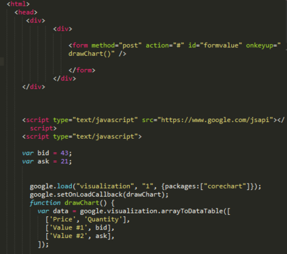

Преимущественно используется в разработке веб-сайтов.
Перед Бренданом Эйхом, нанятым в компанию Netscape 4 апреля 1995 года, была поставлена задача внедрить язык программирования Scheme или что-то похожее в браузер Netscape. Поскольку требования были размыты, Эйха перевели в группу, ответственную за серверные продукты, где он проработал месяц, занимаясь улучшением протокола HTTP[16]. В мае разработчик был переброшен обратно, в команду, занимающуюся клиентской частью (браузером), где он немедленно начал разрабатывать концепцию нового языка программирования. Менеджмент разработки браузера, включая Тома Пакина (Tom Paquin), Михаэля Тоя (англ.), Рика Шелла (Rick Schell), был убеждён, что Netscape должен поддерживать язык программирования, встраиваемый в HTML-код страницы. Помимо Брендана Эйха, в разработке участвовали сооснователь Netscape Communications Марк Андрессен и сооснователь Sun Microsystems Билл Джой: чтобы успеть закончить работы над языком к релизу браузера, компании заключили соглашение о сотрудничестве в разработке. Они ставили перед собой цель обеспечить «язык для склеивания» составляющих частей веб-ресурса: изображений, плагинов, Java-апплетов, который был бы удобен для веб-дизайнеров и программистов, не обладающих высокой квалификацией. Первоначально язык назывался Mocha, затем он был переименован в LiveScript и предназначался как для программирования на стороне клиента, так и для программирования на стороне сервера (там он должен был называться LiveWire). На синтаксис оказали влияние языки Си и Java, и, поскольку Java в то время было модным словом, 4 декабря 1995 года LiveScript переименовали в JavaScript, получив соответствующую лицензию у Sun. Анонс JavaScript со стороны представителей Netscape и Sun состоялся накануне выпуска второй бета-версии Netscape Navigator. В нём декларируется, что 28 лидирующих ИТ-компаний выразили намерение использовать в своих будущих продуктах JavaScript как объектный скриптовый язык с открытым стандартом. В 1996 году компания Microsoft выпустила аналог языка JavaScript, названный JScript. Анонсирован этот язык был 18 июля 1996 года. Певым браузером, поддерживающим эту реализацию, был Internet Explorer 3.0. По инициативе компании Netscape была проведена стандартизация языка ассоциацией ECMA. Стандартизированная версия имеет название ECMAScript, описывается стандартом ECMA-262. Первой версии спецификации соответствовал JavaScript версии 1.1, а также языки JScript и ScriptEasy.
Особенности JScript: 
Синтаксис языка JavaScript во многом напоминает синтаксис Си и Java, семантически же язык гораздо ближе к Self, Smalltalk или даже Лиспу[29][39][Спецификация 2]. В JavaScript: все идентификаторы регистрозависимы, в названиях переменных можно использовать буквы, подчёркивание, символ доллара, арабские цифры, названия переменных не могут начинаться с цифры, для оформления однострочных комментариев используются //, многострочные и внутристрочные комментарии начинаются с /* и заканчиваются */. Структура языка
Платформы исполнения серверных приложений на JS
| название | движок | языки |
|---|---|---|
| Jaxer | SpiderMonkey | C |
| Persevere-framevork | Rhino | Java |
| node.js | V8 | c++ |
Возможности языка, которых нет
Отличие от С

Скрипт, выводящий модальное окно с классической надписью «Hello, World!» внутри браузера:
<script type="application/javascript">
alert('Hello, World!');
</script>
google.com